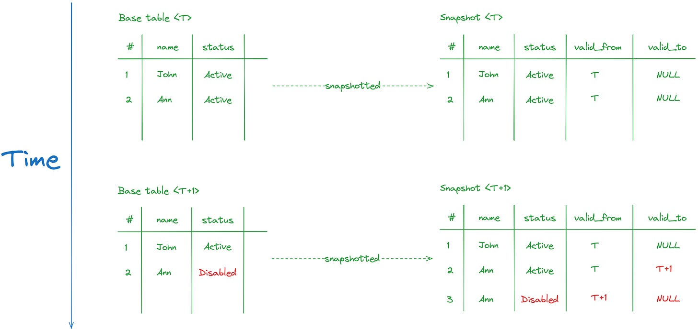
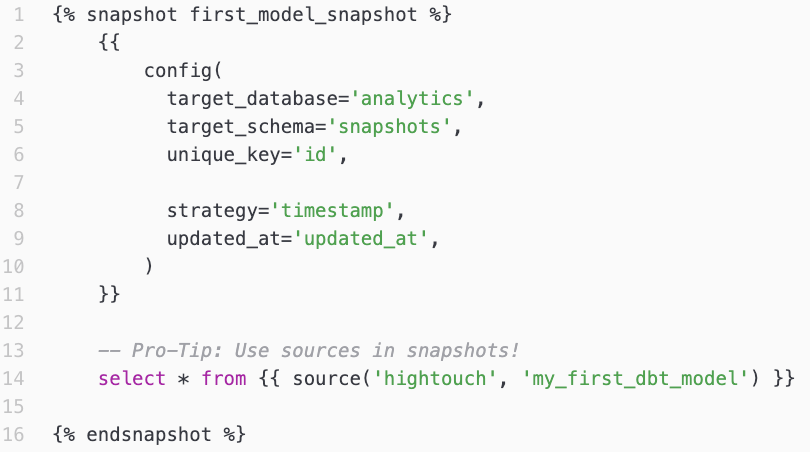

Imagine an orders table where status flips from placed → shipped → completed. Your warehouse only sees the current status. The placed state is gone the moment shipping happens. If a stakeholder asks “how long did orders typically sit in placed before shipping?”, you can’t answer — the data was overwritten.
Snapshots are dbt’s solution. They convert a mutable source table into a slowly-changing-dimension Type 2 history: every time a tracked column changes, a new row gets appended with valid_from and valid_to timestamps. The previous row’s valid_to is closed off. Querying “what was order #42’s status on 2024-03-15?” becomes a where dbt_valid_from <= '2024-03-15' and (dbt_valid_to is null or dbt_valid_to > '2024-03-15') lookup.

A snapshot is a .sql file under snapshots/. The shape is unusual — it uses {% snapshot %} and {% endsnapshot %} tags that wrap a config block plus a select. The walkthrough below has the full file you’ll write. Three pieces of the config block worth flagging:
target_schema='snapshots' — the snapshot lands in a separate schema (created automatically). Default is whatever profiles.yml says, but a dedicated schema for snapshots keeps them organized.unique_key='order_id' — same idea as incremental’s unique key: how dbt identifies “the same logical row across runs.”strategy='check' + check_cols=['status'] — “watch the status column; whenever it changes for an existing order_id, append a new row to the snapshot.” The other strategy is timestamp, which uses an updated_at column instead of column-by-column comparison.
After running dbt snapshot, the table snapshots.orders_snapshot exists with:
select statement (so for select * from stg__orders: order_id, customer_id, order_date, status)| Column | What it holds |
|---|---|
dbt_scd_id |
Hash uniquely identifying each version of each row |
dbt_updated_at |
Timestamp of when this version was loaded |
dbt_valid_from |
When this version became active |
dbt_valid_to |
When this version stopped being active (NULL for the currently-active version) |
So a single order that’s gone through three statuses produces three rows in the snapshot:
| order_id | status | dbt_valid_from | dbt_valid_to |
|---|---|---|---|
| 42 | placed | 2024-03-15 12:00 | 2024-03-16 09:00 |
| 42 | shipped | 2024-03-16 09:00 | 2024-03-18 14:00 |
| 42 | completed | 2024-03-18 14:00 | NULL |
The currently-active row (completed) has dbt_valid_to IS NULL. Queries that want “current state” filter to where dbt_valid_to is null. Queries that want “state at a point in time” use the date-range predicate above.
check vs timestamp strategiesBoth strategies do SCD2. They differ in how dbt detects “this row changed.”
| Strategy | When dbt considers a row “changed” | Required config |
|---|---|---|
check |
Any value in check_cols differs from the previous version |
check_cols: [...] (list of columns to watch) |
timestamp |
The source’s updated_at column is newer than the snapshot’s last load |
updated_at: <column_name> |
Pick timestamp when the source has a reliable last-modified column — it’s cheaper to compute (one column comparison vs many). Pick check when there’s no updated_at, or when only specific columns “matter” for the snapshot’s purpose. For our stg__orders, check on status is the cleanest fit — there’s no updated_at in the seed.
dbt snapshot # all snapshots in the project
dbt snapshot --select orders_snapshot # just one
dbt build runs snapshots too, in DAG order alongside seeds, models, and tests. So in production you typically run dbt build and snapshots happen automatically on the right cadence.
The decision tree:
For an orders table, you almost always want snapshots — operational analyses (cohort analysis, status-transition timing, churn) need history. For a customer_attributes table where you only care about current address, snapshots are overkill.
target_schema. Without it, the snapshot lands in the default profile schema (main for our DuckDB profile), which mixes snapshots with regular models. A dedicated snapshots schema is the convention.check with too many columns. check_cols=['*'] watches every column; any change anywhere triggers a new row. That’s noisy. Pick the columns that matter.dbt_valid_to is null and forgetting null-arithmetic. Snapshot queries that filter to “as of date X” need the (dbt_valid_to is null or dbt_valid_to > 'X') shape — the null or part is critical. Without it, the active row gets excluded from history queries.ref()‘d in the same way until they exist. The first time you dbt build a project that includes snapshots, you have to run dbt snapshot first (or use dbt build which does both in DAG order).Press n to start the exercise.
1. From the repo root, create the snapshot file:
mkdir -p dbt_project/snapshots
touch dbt_project/snapshots/orders_snapshot.sql
The snapshots/ folder ships with the default dbt init scaffold, so it should already exist.
2. Paste this into orders_snapshot.sql:
{% snapshot orders_snapshot %}
{{
config(
target_schema='snapshots',
unique_key='order_id',
strategy='check',
check_cols=['status']
)
}}
select * from {{ ref('stg__orders') }}
{% endsnapshot %}
Three things to flag:
{% snapshot orders_snapshot %} … {% endsnapshot %} — these tags are mandatory for snapshot files. Different from regular models. The name inside the tag becomes the snapshot’s name.target_schema='snapshots' — the snapshot lands in a snapshots schema (DuckDB will auto-create it on first run). Keeps snapshots out of main.check_cols=['status'] — only status is watched for changes. If customer_id were updated for an existing order (which would never happen in real life), the snapshot wouldn’t append a new row.3. Run the snapshot:
cd dbt_project
dbt snapshot --select orders_snapshot
You should see one green line. dbt issued create table snapshots.orders_snapshot as select ..., dbt_scd_id, dbt_updated_at, dbt_valid_from, dbt_valid_to from ....
4. Confirm the table is in the snapshots schema with the SCD2 columns:
duckdb ../database/dev.duckdb -c "select table_schema, count(*) from information_schema.tables where table_name='orders_snapshot' group by 1"
Should show snapshots | 1.
duckdb ../database/dev.duckdb -c "select count(*) from information_schema.columns where table_name='orders_snapshot' and column_name in ('dbt_scd_id','dbt_updated_at','dbt_valid_from','dbt_valid_to')"
Should print 4 — all four metadata columns present.
5. Confirm 99 rows are active:
duckdb ../database/dev.duckdb -c "select count(*) from snapshots.orders_snapshot where dbt_valid_to is null"
Should print 99. All orders are currently in their first-ever snapshot version, so all 99 rows have dbt_valid_to IS NULL.
6. (Optional, to see the SCD2 columns at work.) Peek at the data:
duckdb ../database/dev.duckdb -c "select order_id, status, dbt_valid_from, dbt_valid_to from snapshots.orders_snapshot order by order_id limit 5"
Five rows, each with a dbt_valid_from timestamp (when this snapshot ran) and dbt_valid_to of NULL (still active).
7. (Even more optional.) Run dbt snapshot a second time:
dbt snapshot --select orders_snapshot
The output reports 0 rows changed. The seed is static, so no status differences between runs — the snapshot is unchanged.
8. Press v to verify.
dbt snapshot --select orders_snapshot exits 0.snapshots.orders_snapshot with dbt_valid_to IS NULL.dbt_scd_id, dbt_updated_at, dbt_valid_from, dbt_valid_to) are present in the table.| Symptom | Fix |
|---|---|
Compilation Error: Snapshot 'orders_snapshot' must contain a {% snapshot %} ... {% endsnapshot %} block |
Missing the tag wrapper. The whole content (config block + select) goes inside {% snapshot orders_snapshot %} ... {% endsnapshot %}. |
Compilation Error: Snapshots require either a 'check' or 'timestamp' strategy |
Missing or misspelled strategy='check'. |
Compilation Error: 'check' strategy requires 'check_cols' to be configured |
Add check_cols=['status'] to the config block. |
Catalog Error: Table with name orders_snapshot does not exist! (when querying without schema) |
The snapshot is in snapshots.orders_snapshot, not main.orders_snapshot. Either use the full snapshots.orders_snapshot qualifier or set search_path = 'snapshots'; first. |
| 0 rows in the snapshot | Something failed silently — check the dbt snapshot output. Could be a bad ref() (e.g. ref('stg_orders') single underscore) or a permissions issue creating the schema. |
That’s the last exercise of Stage 4. Press n to take the stage quiz, then on to Stage 5 — Jinja, macros, state selection, and exposures.